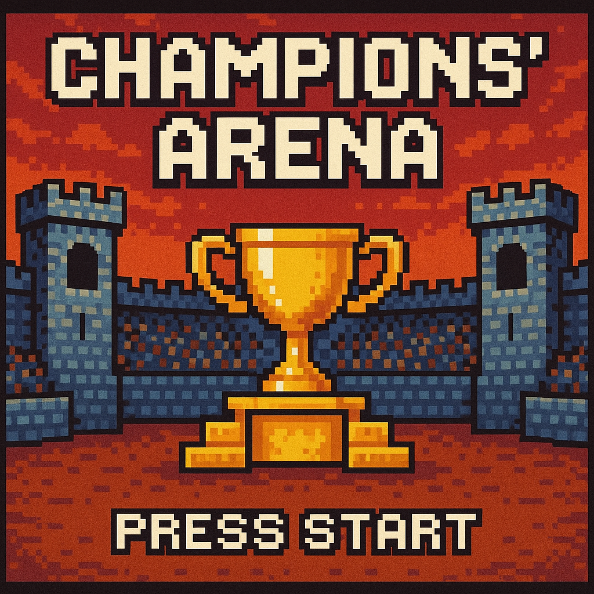
Welcome to Champions' Arena, where strategy, creativity, and programming skill collide. In this project, you will design your own Champion, a powerful combatant with unique abilities, and equip them with a custom Loadout of battle modifiers.
Your Champion will face off against others in a dynamic battle system where every decision matters. As you breathe life into your Champion through object-oriented programming, you will wield the forces of inheritance, polymorphism, and dynamic design.
The Arena awaits your creation. Will your Champion rise to glory, or fall into the dust of the forgotten?
You will design and battle with your own Champion, combining strategy, creativity, and object-oriented code into a single cohesive project.
Your grade reflects all three dimensions equally. The smarter and more creative your design, the stronger your Champion will be in the Arena.
The project culminates in a live Battle Day tournament, where Champions face off in front of the class.
| Item | Description |
|---|---|
| Champion | Your custom fighter. With health, attack, and defense stats |
| Actions | Special moves your Champion can take each turn (attack, heal, defend, etc.) |
| Relics | Passive items that grant ongoing bonuses in battle |
| Tactics | Active strategies that influence how your Champion fights |
| Gambits | Powerful, high-risk / high-reward moves, often single use |
Base stats: every Champion has an Attack value, a Defense value, and a Health pool. The total of Attack and Defense is capped, so building your Champion means making trade-off decisions.
A Loadout: one active Tactic, one active Relic, and one pocketed Gambit that modify battle outcomes while equipped.
An Arsenal: a hand of drawn Modifiers your Champion can swap into their Loadout between turns, giving the battle a strategic deck-management feel.
A set of Actions: the choices available each turn: Attack, Defend, or Play Gambit. Your Action implementations determine exactly how those choices unfold.
When a Champion attacks, equipped Tactics and Relics can boost or reduce damage before it is applied.
Some modifiers trigger automatically based on conditions: attacking, defending, or thresholds you define in your code.
Some Actions require charging: the Champion prepares for multiple turns before unleashing a devastating move.
Gambits are powerful but risky, often single-use. Choose when to play them carefully.
A Champion's Attack and Defense stats are capped: any stat boosts from modifiers must stay within the maximum limit.
Final damage is calculated only after all modifiers have taken effect.
A Champion is defeated when their Health drops to zero or below.
Before you unleash your own Champion, it is important to understand the codebase that powers the Arena. Together we will explore the ChampionsArena repository and build a partial class diagram showing the major classes and how they connect.
As we explore, focus on inheritance, shared behavior, and where the classes you will write will fit into the existing system.
We'll open the ChampionsArena repository to explore the code. Prepare yourself: there are a lot of classes to take in at once. We'll use Gemini to help you understand what you are seeing.
Ask Gemini to explain class roles, relationships, and important methods. But remember, the goal here is exploration, not getting Gemini to write your project.
As you explore, try questions like these to understand the ChampionsArena codebase:
BattleModifier?Action and BattleModifier?ChampionActionBattleModifierTacticRelicGambitTrainingDummyAdvancedTrainingDummyChargeBreakerEmberCrystalAdrenalSurgeOn a whiteboard, arrange your Post-its into a class diagram.
<<abstract>>, or are an <<interface>>.As you arrange them, look for:
Before moving on, make sure you can answer all of these questions:
Tactic, Relic, and Gambit?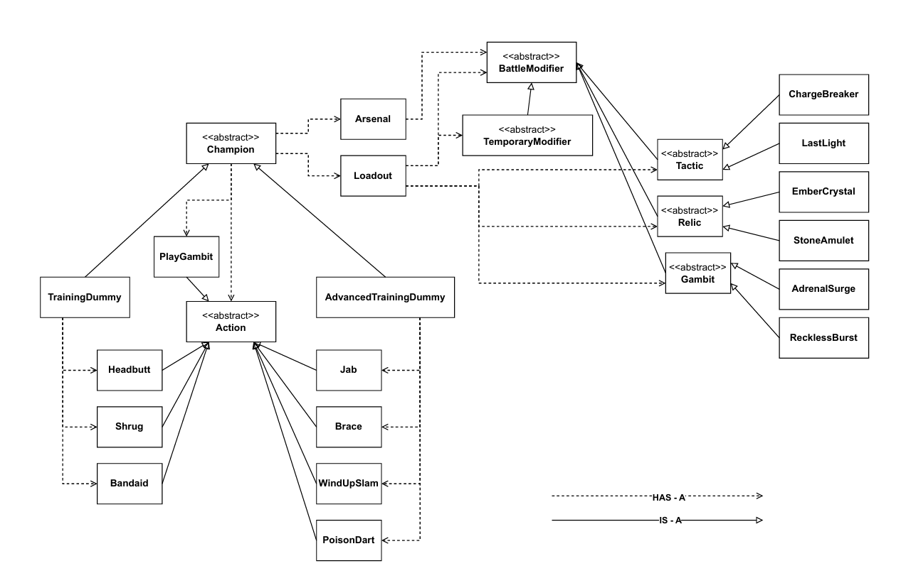
You have explored the full ChampionsArena repository and can refer back to it whenever you want, but you will not need to modify those classes.
You will work from the ChampionStarter repository, which includes the Arena system as a compiled jar. That means you can focus entirely on writing your own classes, and your code will compile and run against the same framework everyone is using.
YourName‑ChampionName makes a great choice.YourName‑Champion will work fine.When you have your repository open on GitHub, you will see all of the files it contains.
Next you will make a local clone of this repository on your computer so you can write and run code.
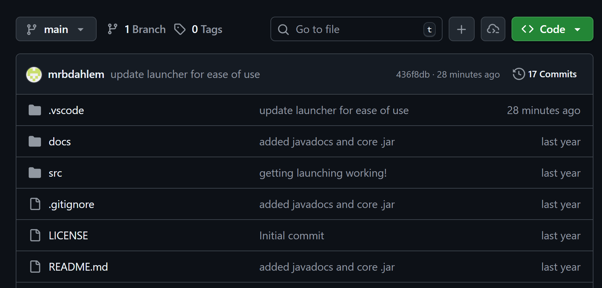
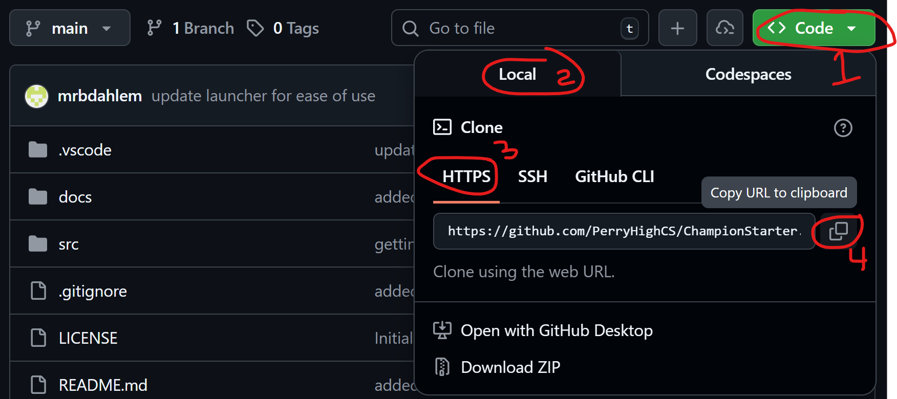
code.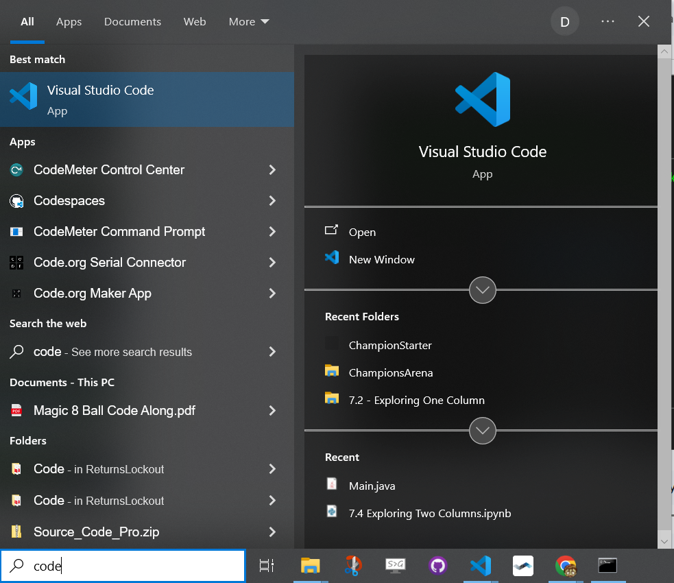
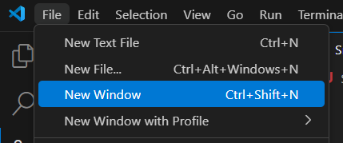
If VS Code already has a project open, choose New Window from the File menu to get a fresh empty window.
Then open the Source Control panel by clicking the 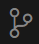
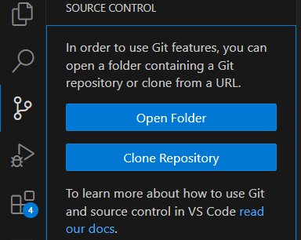
In the Source Control panel, click the Clone Repository button. A popup will appear at the top of your screen.
Paste the URL you copied from GitHub into the box and press Enter.
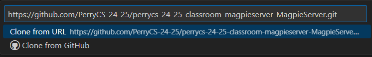
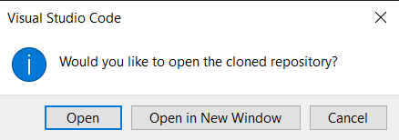
A dialog will open so you can choose where to save the cloned repository. The Documents folder is a good choice. When cloning finishes, VS Code will ask if you want to open it. Click Open.
You will then be asked if you trust the authors of the files in the folder. Click Yes, I trust the authors so you will be able to run the code you write.
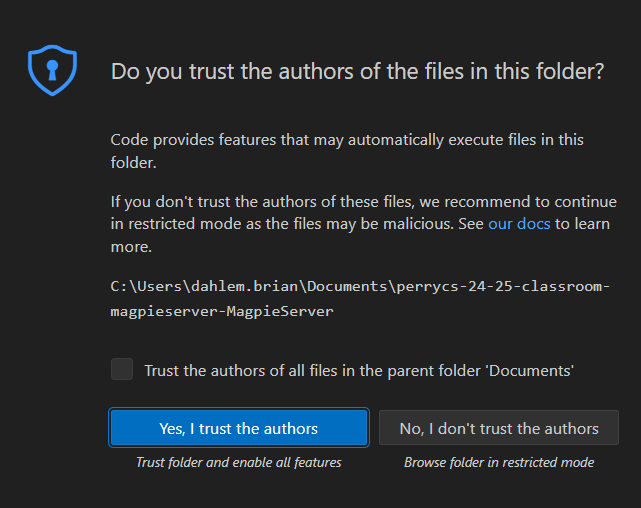
When you modify files, the 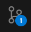
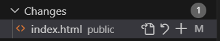
Opening the Source Control panel lets you see those changed files. From there you can open the file, discard the changes, or stage the changes to include in a commit.
As you build your Champion, commit whenever you have a working feature or meaningful progress; do not wait until everything is done.
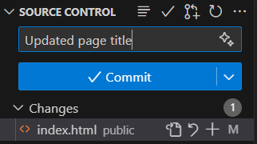
At the top of the Source Control panel, type a commit message explaining what you changed, then click Commit.
If you forgot to type your commit message in the box, a new editor tab pops up asking for a commit message. Type your message at the top of the tab, press Ctrl-S to save, then close the tab.
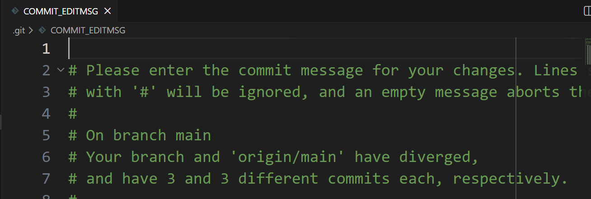
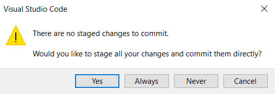
If VS Code says you have no staged changes, it means you did not tell it which files to include in the commit. Since you probably want to include all changed files, click Yes to stage and commit everything.
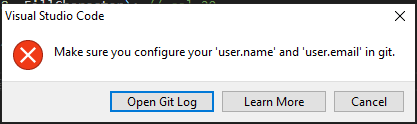
If you see an error about needing to configure user.name and user.email,
you need to tell git who you are before it will accept commits.
Press Ctrl-` (the backtick key next to 1 in the top-left of your keyboard) to open a Terminal.
Then run these two commands, substituting your own email and name:
git config --global user.email "your github email"
git config --global user.name "your name"
Then try committing again.
After committing, the Source Control panel will show a Sync Changes button.
Clicking this button will push your files to GitHub and pull down any changes that were made elsewhere.
Click Sync Changes then OK when the confirmation message appears.
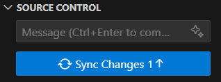
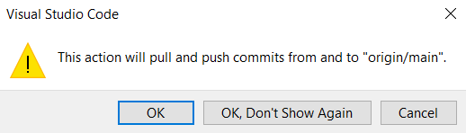
The Source Control panel also gives you access to more advanced git operations through the ⋯ (three dots or kabob) menu at the top of the panel.
From there you can pull changes from another computer, push manually, branch to isolate changes, and much more.
Get comfortable committing and syncing regularly. Your repo is your backup.
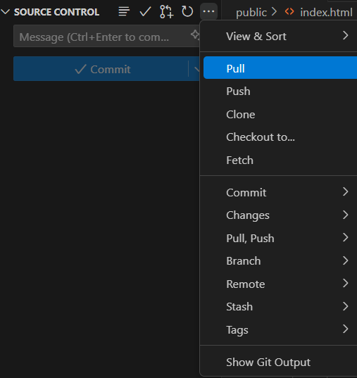